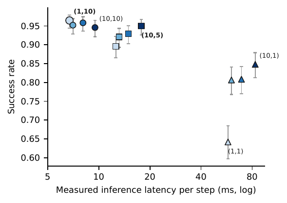
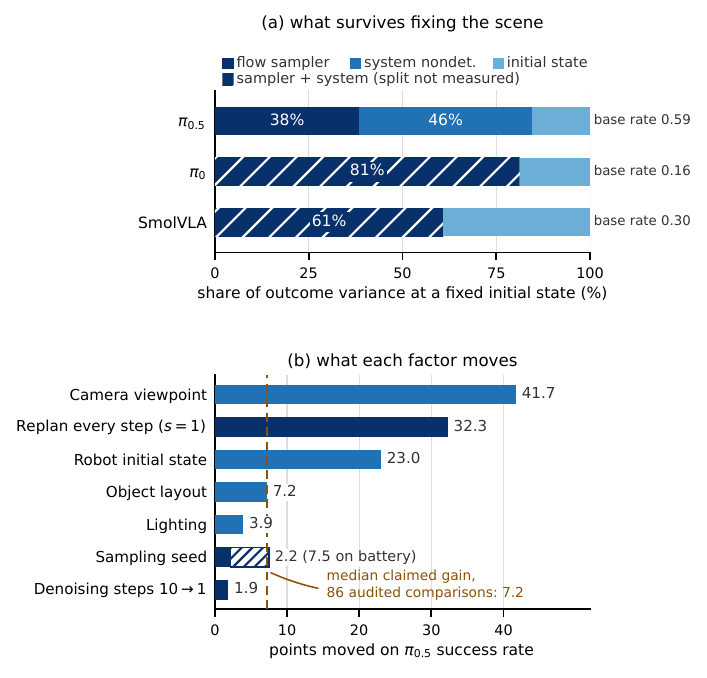
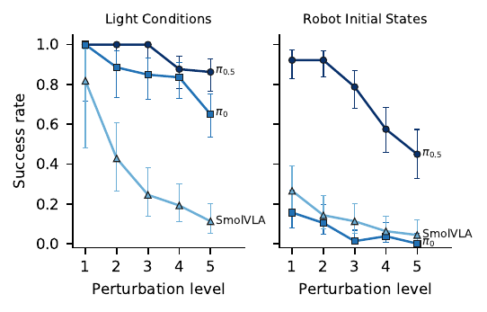

On pi0.5, a single Euler denoising step executed over a 10-action horizon matches the
shipped 10-step default at 2.7x lower measured inference latency. Statistically
indistinguishable within a pre-declared plus or minus 5-point margin on the registered LIBERO-10
battery, on the unmodified public checkpoint: 0.965 versus 0.950 success, 6.7 versus 17.8 ms per
executed step. Replanning cadence, not denoising budget, is the dial that matters: every
replan-every-step cell loses 10 to 32 points to its horizon-10 counterpart, and the ordering holds
on all three policies tested. The claim is an equivalence certificate rather than an anecdote
because the study measured where a success rate's variance comes from: with the scene held fixed,
the flow sampler and system nondeterminism carry 61 to 84 percent of it, which is what a rollout
budget has to buy. Scope, stated up front: the battery is near ceiling, the cut costs 4.7 points
under camera-viewpoint shift, and pi0 does not tolerate it.

The whole frontier is one cell: a single denoising step executed over a horizon of
10. The published default (10, 5) is dominated, and nothing on the grid dominates (1, 10).
Twelve cells, 480 paired episodes each, Clopper-Pearson intervals, latency measured server-side
from the released episode records.

Why the certificate holds: where the variance lives, and what it costs. Top: with
the initial state held fixed, the flow sampler accounts for most outcome variance across three
policies. Bottom: what each factor moves on the reported rate. The seed shifts the 500-episode
aggregate by only 2.2 points precisely because averaging suppresses the per-episode variance
above it, and that gap is the budget an honest protocol has to buy.
Findings
The shipped default is dominated. For pi0.5 a single Euler step at horizon 10 matches
the 10-step default at 2.7x lower measured inference latency, statistically
indistinguishable under a pre-declared equivalence margin, on the unmodified public
checkpoint (exact McNemar p=0.26 on 480 pairs; difference interval -1.2 to +4.1 points).
Per-chunk inference cost falls from 88 to 66 ms.
Horizon dominates denoising budget. At horizon 1, success climbs from 0.642 to 0.848
as steps go from 1 to 10; at horizon 10 the ordering inverts and one step is nominally best.
Every horizon-1 cell loses 10 to 32 points to its horizon-10 counterpart, and the horizon
ordering replicates on pi0 and SmolVLA. Single-step sufficiency is a property of the policy,
not the benchmark: pi0 pays for dropping steps even at horizon 10 (the 10-step cell beats the
1-step cell by 3.0 to 12.8 points, p=0.00025), and SmolVLA is inconclusive at the margin.
Where the certificate stops. The battery is near ceiling: at the default, seven of
eight tasks exceed 0.96. Restricted to the six non-ceiling tasks the interval widens to
-1.1 to +5.6 and no longer certifies plus or minus 5; the direction is stable in every
subset (the frontier leads by 1.5, 1.9, and 6.7 points). The cut's one confirmed price is
4.7 points under camera-viewpoint shift (pre-declared 838-pair sample, exact McNemar
p=0.0008). Both restrictions are exploratory (deviations log, Entry 13).
Why you can trust the number: the scene is the smallest part of the variance. With
the initial state held fixed, 84, 81, and 61 percent of outcome variance survives for pi0.5,
pi0, and SmolVLA, across base rates from 0.16 to 0.59, replicating at three environment
seeds. A replicate block splits that surviving share on the informative task into the flow
sampler (38.5 percent of total) and system nondeterminism (46.0 percent). Others have shown
few steps can suffice and that the two dials couple; what the powered factorial on released
weights adds is a claim of equivalence rather than an anecdote, and the decomposition is
what says the paired design behind it averages over the right noise.
The budget that follows. Rerunning the field's standard 500-episode LIBERO protocol
changing only the sampling seed moves the headline number by 2.2 points, a band already
containing 27 percent of the recomputable improvements claimed across 50 recent VLA papers.
At the audited median of 50 rollouts per task the minimum detectable effect is 18 points; a
2-point claim costs 2,200 episodes per arm.
Rankings survive off the floor; margins never do. Across four LIBERO-Plus axes, one
16.5-point clean gap stands for anything from 9.6 to 67 points of deployed margin (the clean
anchors are single uncontrolled-seed draws, disclosed with their seed band in the paper).
The single significant rank inversion (SmolVLA over pi0 under robot-state shift, exact
p=0.0022; exploratory, post-freeze axis) appears exactly where an axis floors the trailing
policies.
A third of published claims cannot be checked at all. Across 50 audited VLA papers,
34.4 percent of highlighted comparisons state no usable rollout count, so the claim cannot be
evaluated even in principle.

Two perturbation axes, three policies, frozen variant sets. Lighting degrades
without reordering; robot-initial-state shift floors pi0, where the clean pi0 versus SmolVLA
ordering inverts (exact p=0.0022; exploratory, post-freeze axis).
Tooling
Every number regenerates from released per-episode JSONL records by one script, including the
tables and the abstract's numerals. The harness is pip-installable
(pip install roborigor): exact intervals, paired comparisons, a rollout-budget
calculator, variance decomposition, and a campaign runner with exactly-once resume.
BibTeX
@misc{gunukula2026shippeddefault,
title = {The Shipped Default Is Dominated: Powered Equivalence for Flow-Policy Inference Dials from a Decomposition of Evaluation Variance},
author = {Gunukula, Nihal},
year = {2026},
howpublished = {Technical report},
url = {https://nihalgunu.com/roborigor/shipped-default-is-dominated.pdf},
note = {Code and per-episode logs: \url{https://github.com/nihalgunu/roborigor}}
}
Page assets and numbers are generated from the released data; see the repository
for the drift test that keeps them honest. An earlier draft of this report circulated under the
title "Same Scene, Different Answer"; the numbers are identical and the
earlier PDF remains available.